Klient Daniel Zajíček (Broker Consulting) + F. Furch, varianta A 39 900 Kč bez DPH, platba po předání. Stav k 7. 11. 2026.
Hudba B. Grade 7. 11.: tvůj drone grade ze Šlapanic (DRX z „AI ZABERY k nabarveni v2“, DJI_0760) + LUT „FD filmovy kontrast“ (stažené středy, jemná S-křivka) v posledním nodu,
na všech DJI klipech ve CLAUDE Valtice A v1 i ve VIZ k nabarvení; projekt REALITY/Jelinek - Valtice.
Chvění tele záběrů po stabilizaci 1,2–4,7 px (limit 0,95) – dořešit po gradu.
Tyhle klipy jsou celé na timeline VIZ k nabarvení. Do každého osadím dům (3D model podle D.1.1, kamera z trackingu, nasvícení podle času
a směru slunce ze SRT; výšky přepočtené – start byl ~16 m nad pozemkem). Štítek „Vizualizace“ v obraze.
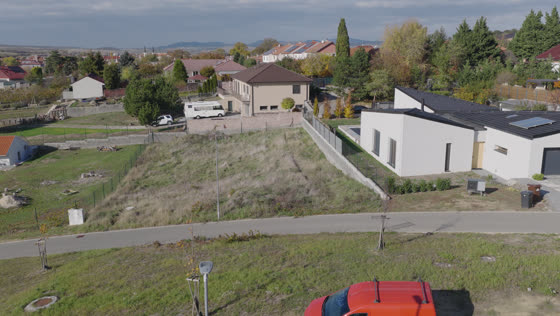
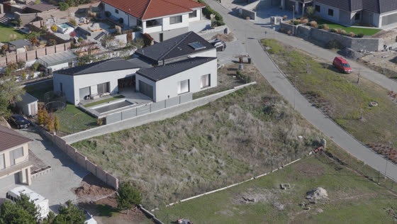
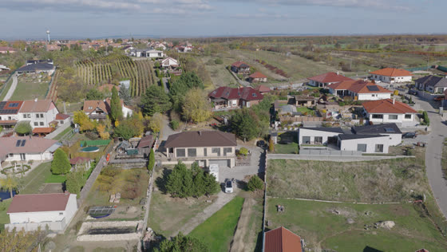
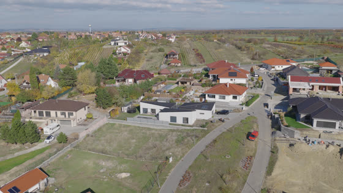
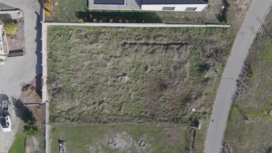
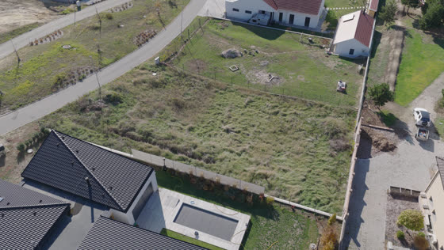
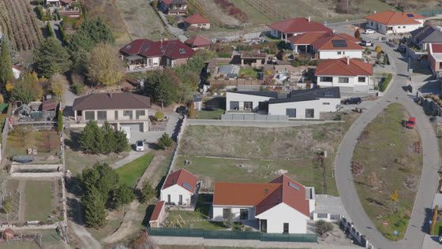
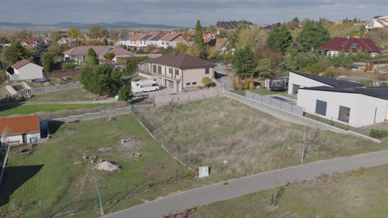
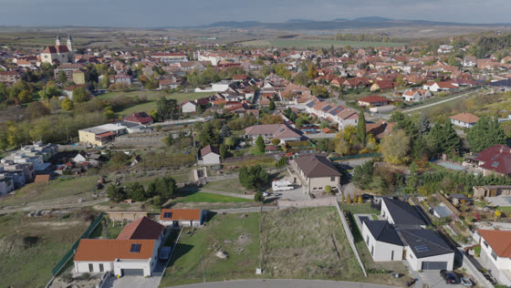
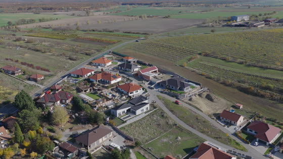
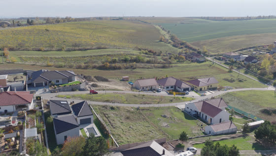
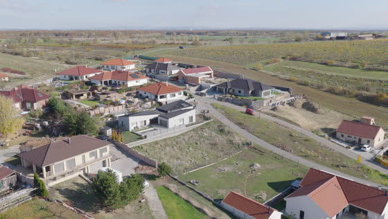
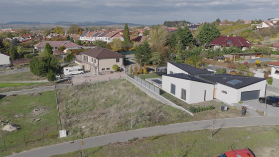
| Oblet | 0709 (S) → 0713 (Z) → 0716 (JJZ) → 0718 (JV) → 0720 (V), 12:13–12:15, stejná výška ~20–34 m → 4 přechody |
| Nízko od silnice | 0687 → 0688 → 0689 → 0690 (švenk z jedné pozice) → 3 přechody |
| Postup | nejdřív dům do fotek (stejný 3D model pro všechny pohledy, skill osazeni-vizualizace), pak Kling 3.0 start+end 5 s |
| Ceny | Nano Banana Pro 2 kr / snímek, Kling 3.0 start+end 5 s ~7,5 kr / klip (std, bez zvuku). Oblet 4 klipy ≈ 30 kr + snímky ≈ 10–20 kr, s opravami do ~70 kr. Nic nespouštím bez tvého „jo“. |
Pozor: v XMP těchto dronů sedí směr kamery s FlightYawDegree, ne s GimbalYawDegree (o 31,7° vedle). Popisky věží v 0720 dané okem.
| Záběry | ~/Desktop/bordel/Jelinek - Valtice/dron novejsi - mnohem lepsi pocasi/ (61 klipů, 28mm 6K s příznakem otočení) |
| Střih | ~/Desktop/bordel/Jelinek - Valtice/_strih/ (plan_v1.json, grafika.py, zvuk.py, resolve_v1.py) |
| Fotky | FINAL FOTO/ (31) · vyznačení nabidky/…/fotky_vyznaceni/ |
| Branding | nabidky/…/brand/ (brand.json, loga) |
| Report z natáčení | nabidky/…/natoceni/REPORT_natoceni_2026-11-04.md |